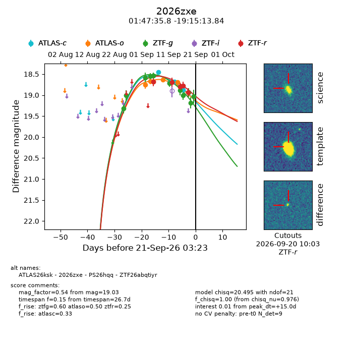
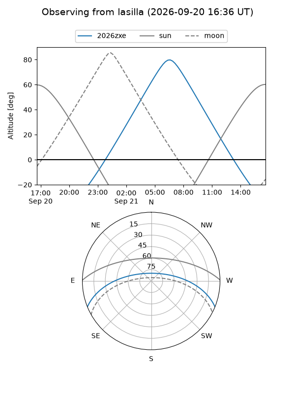
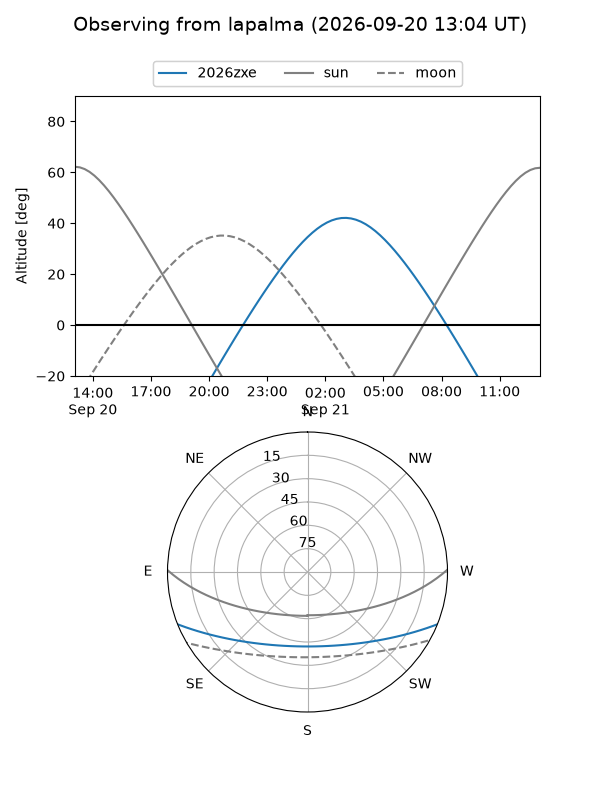
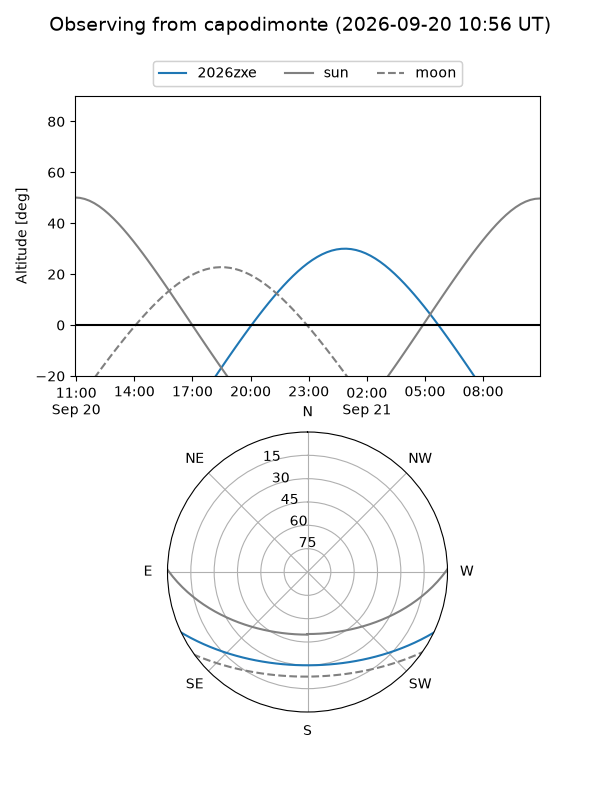
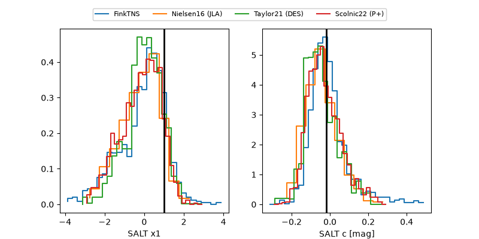

2026zxe
Target 2026zxe at 2026-09-21 03:25
Aliases and brokers:
FINK-ZTF: ztf.fink-portal.org/ZTF26abqtiyr
Lasair-ZTF: lasair-ztf.lsst.ac.uk/objects/ZTF26abqtiyr
ALeRCE-ZTF: alerce.online/object/ZTF26abqtiyr
YSE-PZ: ziggy.ucolick.org/yse/transient_detail/2026zxe
TNS name: wis-tns.org/object/2026zxe
Direct TNS query: direct search
alt names
ZTF26abqtiyr (ztf,fink_ztf)
2026zxe (tns,yse)
ATLAS26ksk (atlas)
PS26hqq (panstarrs)
Coordinates:
equatorial (ra, dec) = 26.8990,-19.25384
equatorial (HMS+DMS) = 01:47:35.76,-19:15:13.84
galactic (l, b) = (184.4717,-74.90000)
Flags:
TNS type: nan
peak dt: +15.0
Photometry:
last atlasc=18.87, atlaso=18.70, ztfg=19.03, ztfr=18.94
4 atlasc, 5 atlaso, 11 ztfg, 5 ztfr detections
Lightcurve

Visibility



Additional plots
